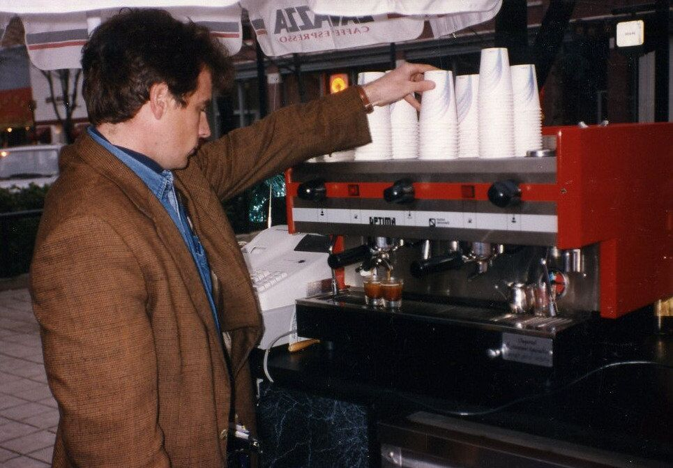
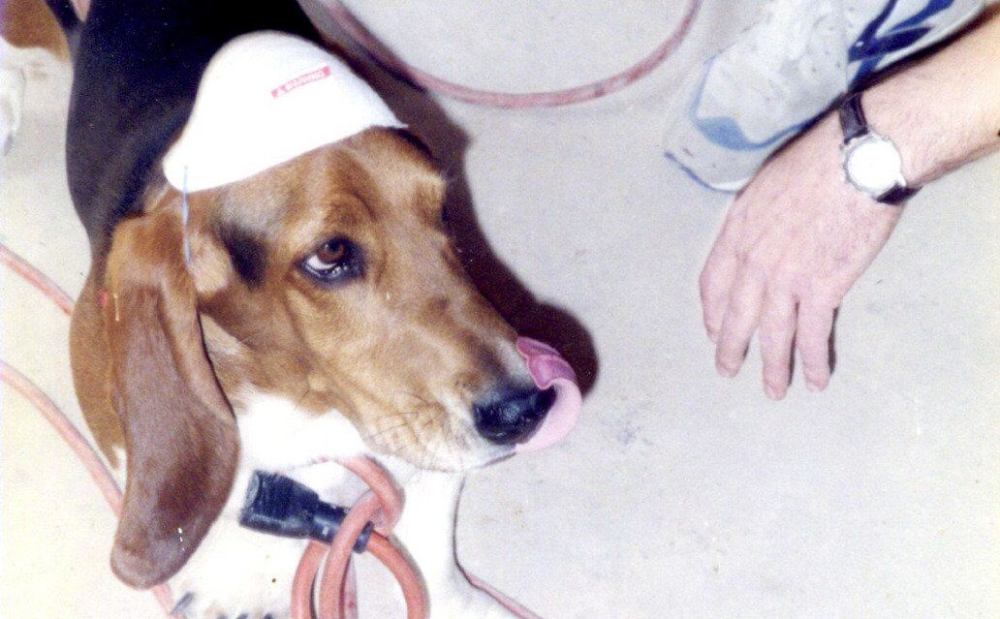
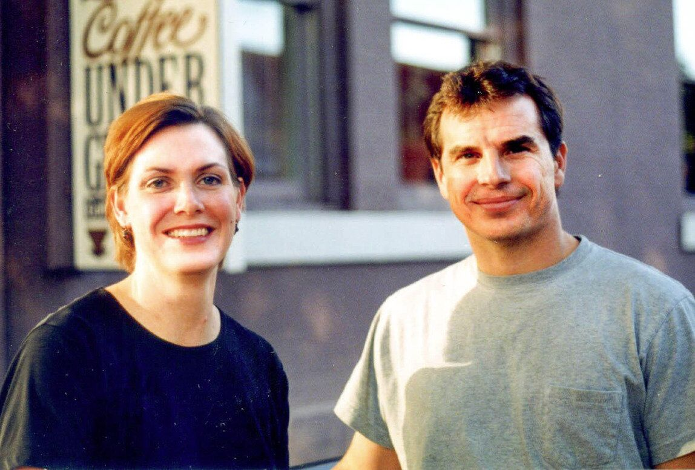
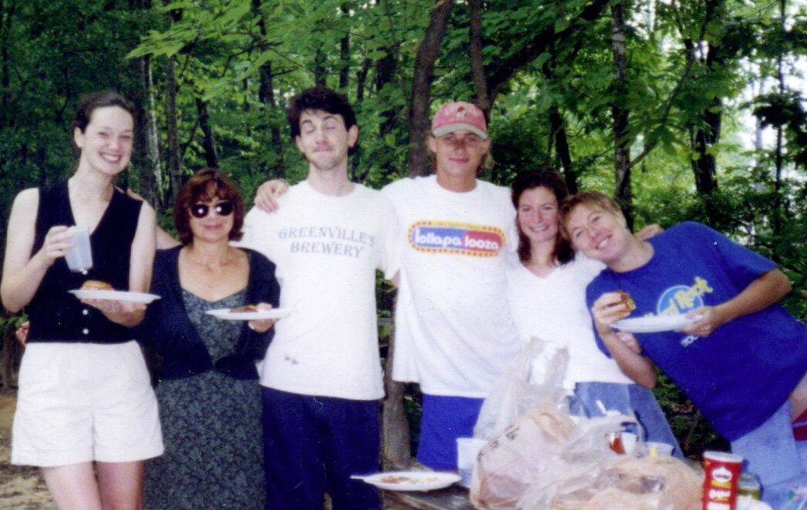
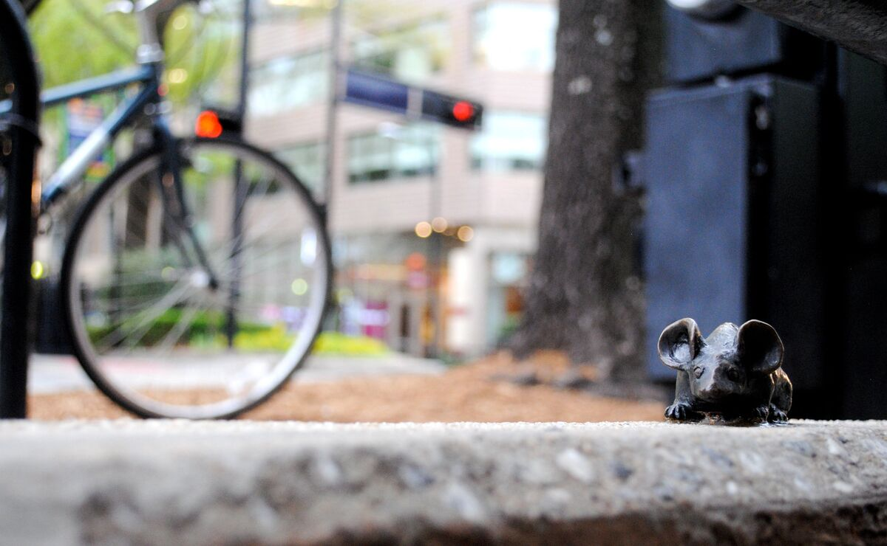
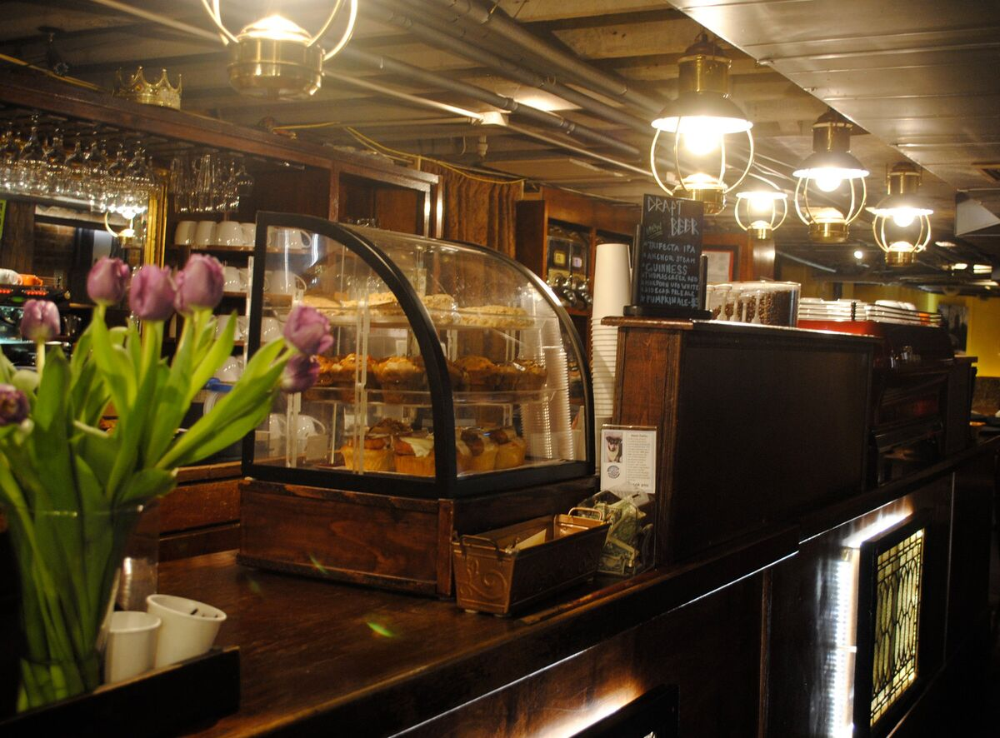
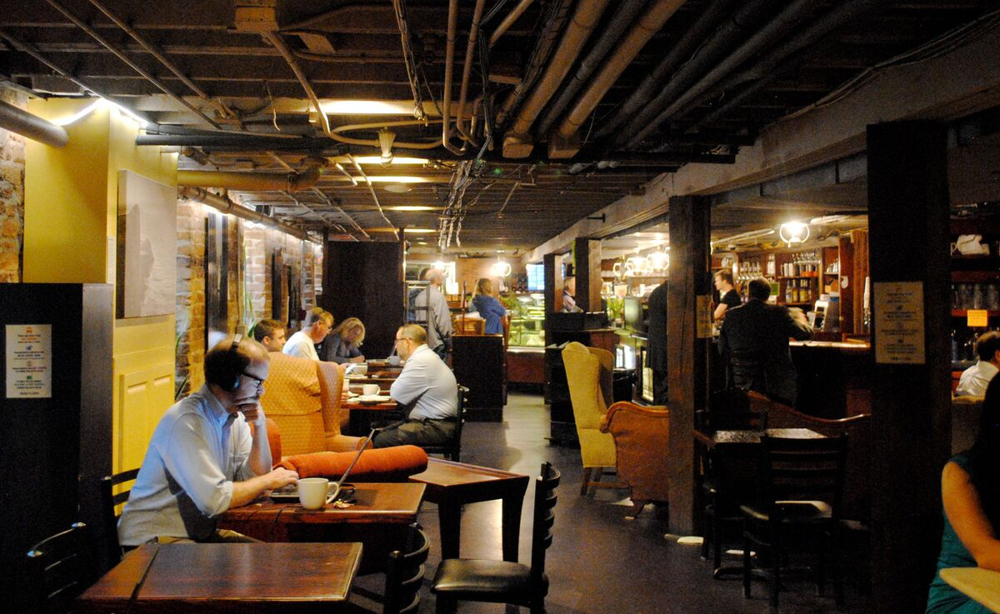
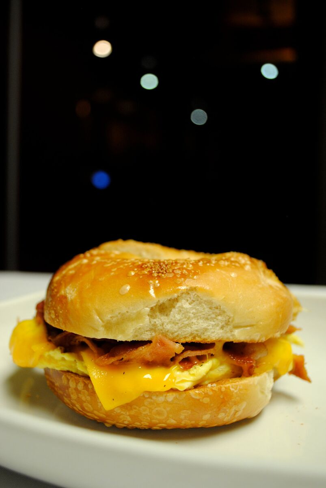
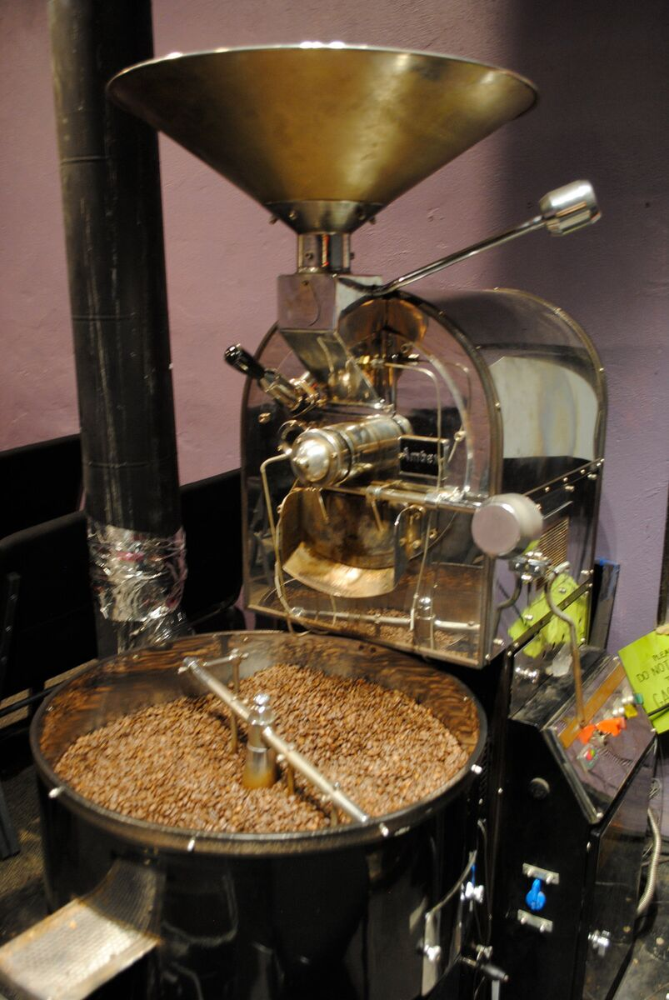

IT BEGAN... in 1991 when...
Dana Lowie (me) and Steve Taylor vacationed in Seattle. That incurable “coffee bug” is hard to see, yet easy to feel. It took a big bite, so we brought it back home. Like many visitors to the coffee capital of the US, we set out on a quest to bring Seattle-style coffee to Greenville.
December 31, 1992 - First Night Festival
...we opened an outside coffee cart named Pony Espresso, within Piazza Bergamo, located just across the street from us now. The chilled New Year’s Eve crowd wanted hot chocolate & mochas. Friends and family, 9 in all, took turns making frantic trips to the nearby grocery for more milk. After that jump into the fire, Steve operated the cart during the weekday mornings while working evenings at the local newspaper. Dana continued as a graphic artist for a small downtown firm and teamed up with Steve on Friday and Saturday evenings at Pony Espresso. We met many new friends & learned boodles about coffee along the way.
Wheels Were Spinning
The next step was to find a permanent indoor location. Dana and Steve shared their dream with a fellow cyclist, Cathy Anderson, who wanted to open a retail bakery, so the three created a plan. We found a great location at the corner of Main St. & Coffee St, in the underground level of the Cauble Building.
Within the next year and a half, the three of us researched, negotiated, planned and got advice. We designed, built, painted, stocked, got inspections, hired & trained. Of the many business name ideas, the very first, Coffee Underground, won out. Then, the time had come!
May 1, 1995:
Coffee Underground opened the doors to a lively crowd. Luckily it was just the right time, as Greenville craved this new option to the bar scene. As you entered, you saw the existing cozy seating area. We had a tiny hidden kitchen where a lot of action took place. We named an adjacent room “the gallery” and local artists filled the walls. The third room was transformed into a theater, where Jeff Sumerel directed live improv shows & screened independent films.
Over the Years:
After about a year, Cathy decided to pursue other business ventures, so the two of us continued operating and perfecting CU. We expanded the menu by adding beer, wine and cocktails as well as more food. In order to manage the crowd inside, we began table service in the evenings. A few years later, Steve took off to the Big Apple, then moved to Paris, then back to The States where he lives with wife, Cynthia and son Perry. It was a little daunting at first to go it alone. Along with the dedicated staff (especially Krystina), we found a rhythm and stuck with it.
In 2000, I purchased the 5200 square feet where CU still sits. For the next 2 years, we had a second location (CU2) in the newly renovated Poinsett Hotel, yet the timing just did not work out.
In 2005, we decided to begin roasting our own coffee beans. Until that point, we had purchased freshly roasted coffees from West End Coffee. In 2008, we grew underground by acquiring another unit, and now have a big kitchen and more seating in our cozy Red Room. So I am the last of the original three owners. Our awesome staff members and I continue to successfully operate CU.
Aahh, a few memories...
Most bring happy thoughts, and even some “not so perfect” events ended up as funny stories! Once, during a staff picnic, the dog was stung by bees, the new grill didn’t work, it rained buckets & someone sat in the potato salad. Another time, a fire extinguisher was accidentally deployed which resulted in an inside white-out. We won’t forget the great Greenville flood of 2014; our staff, improvisers, & neighbors bailed out buckets of water from our outside walkway to keep it dry inside! No one can forget Hurricane Helene in 2024. We are so lucky and grateful. Our hearts go out to our friends and neighbors who were not so lucky, including the devastated areas of NC.
Thanks to YOU...
We’ve been buzzing for over 30 years. We are happy to be considered a downtown landmark, and thankful for another successful year. Here’s a toast to many more happy years for you and for CU.








